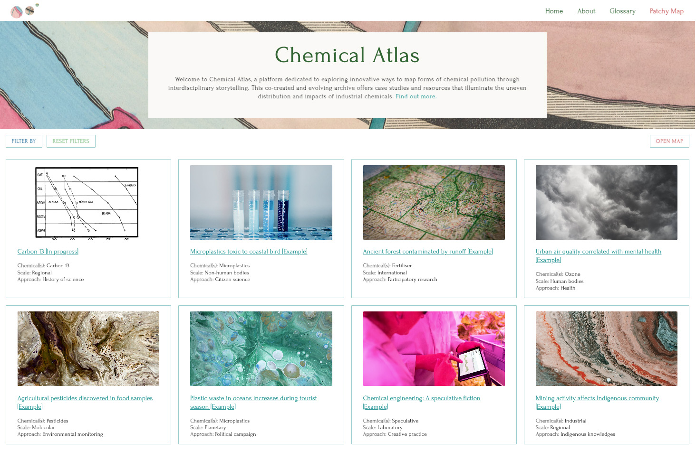

Welcome to Chemical Atlas
Chemical Atlas is a multimedia platform that explores ways of mapping the sprawling, complex, and ongoing reverberations of chemical pollution. This is not a comprehensive atlas, but a digital prototype, bringing together methodological resources and storytelling to better understand and communicate uneven chemical relations. Mapping pollution is more than plotting data on a map. It's about making sense of harm across spatiotemporal scales through multiple ways of knowing: scientific, social, legal, and artistic.
Contributors from all fields are invited to co-create a more-than-human view of environmental degradation and modes of resistance by thinking with and beyond chemicals. In collaboration with Andrew Barry and Martin Olwenn, Lucy facilitated a co-design workshop with a group of experts on June 6, 2025, to exchange ideas among our community of practice. The workshop inspired Lucy's process of designing and developing a working prototype using pure JavaScript, HTML, and CSS, which is now hosted open source on GitHub Pages. This project was funded by UCL Grand Challenges Small Grants.